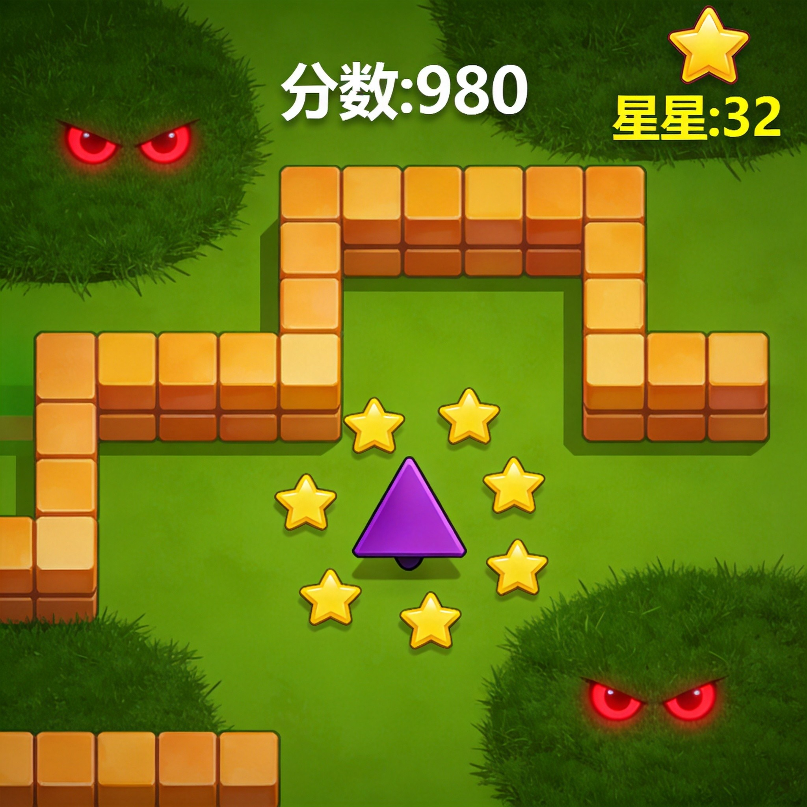
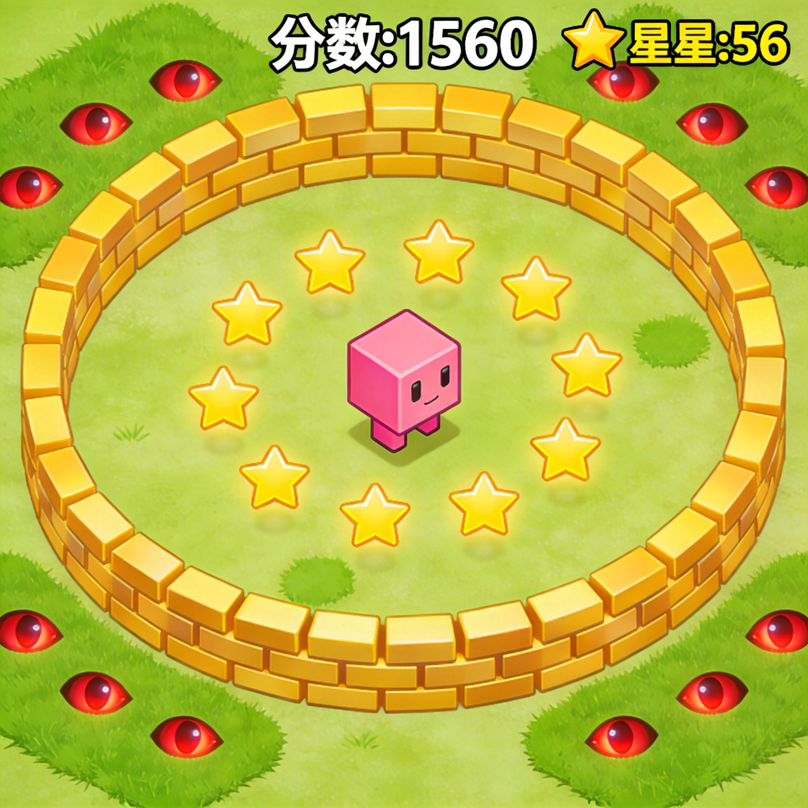
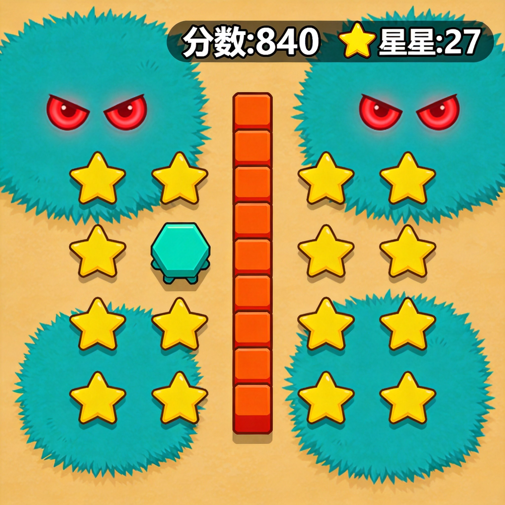

Spawner.io is a unique survival .io game where you tap to spawn blocks, build defensive walls, and place turrets to survive endless waves of enemies. Unlike typical .io games where you just grow bigger, Spawner.io challenges you to think strategically about construction and resource management. Every tap matters—use your blocks wisely to create barriers, traps, and defensive positions that keep you alive as long as possible.
🎯 Game Basics

The Spawn Button
The core mechanic is the SPAWN button—tap it repeatedly to generate blocks and turrets around your character. Each spawn costs resources, so timing and placement matter. I learned early that spam-spawning everything isn't the answer; strategic placement beats random deployment every time.
Collecting Stars
Yellow stars scattered around the arena are your primary resource. Grab them to replenish your spawn energy. Stars respawn periodically, so returning to cleared areas can be profitable. The star counter in the top-left shows your progress—hit 5 stars to level up and get a temporary boost.
Enemy Eyes
Those creepy cartoon eyes in the grass patches? They're enemies waiting to attack. They'll chase you on sight, so don't linger near grassy areas. I learned this the hard way—those "cute" eyes spell instant death if you get cornered.
⚙️ Core Mechanics

Block Types
You'll spawn different block types: solid blocks for walls, brick blocks for paths, and turret blocks that automatically fire at nearby enemies. Mixing block types creates versatile defenses—walls slow enemies down while turrets deal damage.
Turret Placement
Turrets target the nearest enemy automatically but have limited range. Place them at chokepoints and corners where enemies must pass. In my experience, 2-3 well-placed turrets outperform 5 randomly scattered ones.
Enemy Waves
Enemies spawn in waves with increasing difficulty. Early waves have few enemies; later waves overwhelm unprepared players. Each wave survived increases your survival time score—aim to beat your personal best.
Don't spend all your stars at once. Keep a reserve for emergency spawning when enemies corner you. I usually maintain at least 2-3 stars in reserve before expanding my base.
Defense Building
Walls created by spawned blocks form your base. Keep your spawn point protected on all sides, but leave escape routes. A sealed-in base looks safe but becomes a death trap when enemies break through.
⚔️ Survival Strategies

1. Start Central, Expand Outward
Begin near the center where you're less likely to get cornered. Build walls in a rough circle, then expand outward as you gather more stars. This gives you reaction time when enemies approach.
2. Create Layered Defenses
Single walls break easily. Stack blocks to create thick barriers, or build two walls with a gap for enemies to get stuck in while turrets fire. Layered defenses buy you critical seconds to react.
3. Keep Moving
Standing still makes you an easy target. Even with a fortified base, keep your character mobile within your walls. Enemies target stationary players first—constant movement keeps you safer.
4. Prioritize Turrets in Corners
Corner positions let turrets cover multiple approach angles. Place high-value turrets where they maximize coverage. Low-value turrets can fill gaps in your outer walls.
5. Clear Grass Before Expanding
Expanding into grass patches invites enemy spawns right at your doorstep. Clear nearby grass first, then expand. This reduces sudden death scenarios where enemies pop up inside your base.
6. Emergency Escape Routes
Always keep one or two unblocked paths leading out of your base. When enemies overwhelm your defenses, you'll need an escape route. Forcing through your own walls wastes precious seconds.
7. The Retreat Strategy
When things go south, abandon your base and run. A mobile player survives longer than a fortified corpse. Find a new spot, rebuild, and try again. Pride gets you killed in Spawner.io.
8. Level Up Priorities
When you level up (5 stars), choose upgrades that match your playstyle. Offensive upgrades boost turret damage; defensive upgrades make walls stronger. I prefer a balanced approach for flexibility.
💎 Pro Tips
Watch the spawn counter. Enemies spawn at regular intervals—use the calm between waves to repair defenses and collect stars. Timing your spawns for post-wave lulls keeps you ready for the next attack.
Build funnels, not boxes. Wide open spaces waste turret coverage. Create narrow approaches that force enemies into kill zones. Funnels concentrate enemy movement where your defenses are strongest.
Know when to abandon ship. If your walls start crumbling, don't waste resources trying to save them. Cut your losses, run, and rebuild elsewhere. I've saved countless runs by abandoning doomed bases early.
Use water as natural defense. The blue water areas slow enemy movement. Build along water edges to add natural barriers. Enemies crossing water take longer, giving turrets more attack time.
❓ Frequently Asked Questions
How do I spawn blocks faster in Spawner.io?
Rapidly tap the SPAWN button to generate blocks faster. Each tap costs stars, so collect stars between spawn bursts. Practice the rhythm of collect-spawn-collect to maximize your build rate.
What's the best defense setup?
Layered walls with corner turrets work best. Create outer walls, inner walls with a gap, then turrets in corners. This forces enemies through multiple barriers while turrets fire continuously.
How do I deal with enemy eyes in grass?
Avoid grass patches and clear them before they spawn enemies nearby. If chased, lead enemies toward your turrets rather than running blindly. Turrets will handle pursuers if you position correctly.
What happens when I level up?
Leveling up gives you a temporary boost and choice of upgrade. Select upgrades that address your current weaknesses—more damage if turrets are weak, stronger walls if you're getting breached.
Can I play Spawner.io on mobile?
Yes, Spawner.io works on both desktop and mobile. On mobile, tap the screen to move and use the spawn button to create blocks. Controls are optimized for touch devices.
How long can you survive in Spawner.io?
Survival time varies by skill and luck. Beginners might last 1-2 minutes; experienced players can survive 5+ minutes. Each wave gets harder, so longevity depends on adapting your strategy as difficulty increases.
📝 Related Games to Try
Love building and survival? Try Defend.io for pure tower defense, Dogod.io for evolution battles, or Hole.io for a different kind of growth challenge.
📝 Conclusion
Spawner.io rewards smart builders over careless tappers. Every block matters, every turret placement counts, and knowing when to retreat saves more runs than aggressive defense ever could. Build strategically, stay mobile, and keep that emergency escape route open.
Start spawning and build your way to survival! The waves are coming—will you be ready?
Last updated: May 28, 2026
Written by the iogameguide.com team